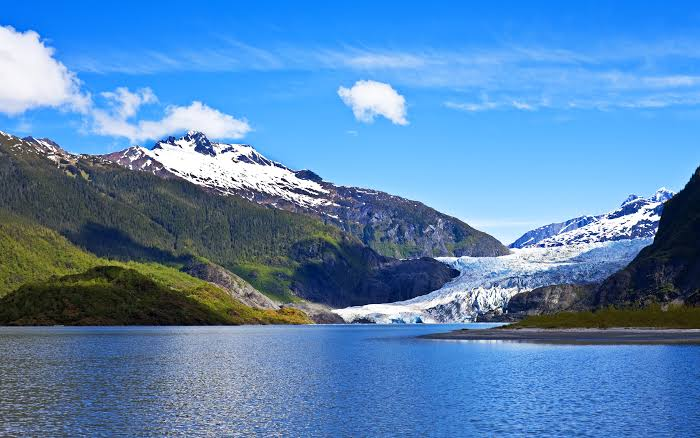

About a mile
From 1986 to 2024, the glacier retreated by about a mile and thinned in places by 2,000 feet.

Mendenhall Glacier, outside Juneau, Alaska, has shrunk dramatically since its peak in the late 1700s, when it spilled over much of the Mendenhall Valley. Explore the facts, causes and impact of its retreat.
From 1986 to 2024, the glacier retreated by about a mile and thinned in places by 2,000 feet.
In November 2025, scientists confirmed the glacier no longer touches Mendenhall Lake.
At its peak in the late 1700s, the glacier spilled over much of the Mendenhall Valley.
The Juneau Icefield, which feeds Mendenhall, lost about 10% of its ice between 2005 and 2019.
From 1984 to 2018, the terminus retreated about 1,900 meters as the snowline climbed.
Researchers are using radar to find another lake under the ice that could speed retreat again.
Warmer air melts more ice. Scientists note that rising temperatures increase glacier melt around the world.
The snowline on Mendenhall has climbed, so less of the glacier gets fresh snow to replace what melts.
The Juneau Icefield that feeds Mendenhall lost about 10% of its ice between 2005 and 2019.
Suicide Basin, beside the glacier, has released outburst floods into the Mendenhall River nearly every summer since 2011.
On Aug. 13, 2025, the river crested at a record 16.65 feet, close to the top of the temporary flood barriers.
Suicide Basin formed when nearby Suicide Glacier retreated, and it can now hold more water than in past years.
Mendenhall Glacier is the largest glacier in Southeast Alaska and the third-largest in the United States.
The terminus has fully receded off the water and onto land. The famous ice caves have largely collapsed due to thinning ice.